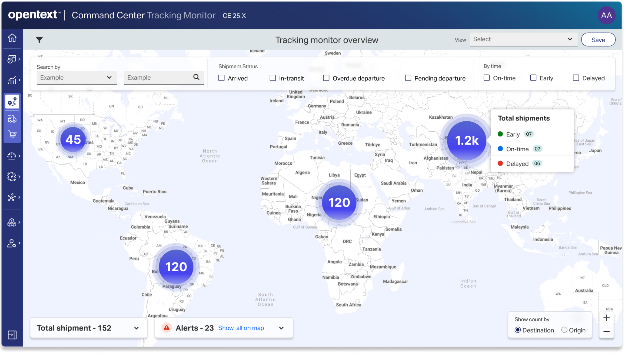
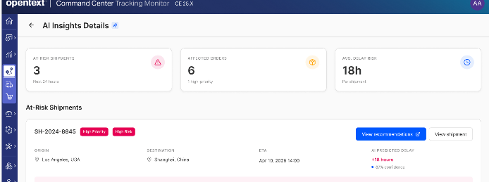

A shipment goes dark somewhere between the warehouse and the customer's inbox.
Nobody could say where, why, or who it would hit — because the system that showed where things were and the system that showed what they meant had never spoken to each other. This is the story of building the view that connects them.
Two systems that told half a story each.
OpenText's supply chain customers ran on two separate views: one showed what had been planned — orders, commitments, line items. The other showed what was happening — live shipment scans, GPS pings, carrier updates. Both were accurate. Neither was useful alone.
A customer service rep fielding "where's my order" had to open a tracking tool to find the shipment, then flip to a transactional system to find the order it belonged to, then do the arithmetic herself to figure out who was affected and how badly. Multiply that by a few hundred shipments a day, across a handful of roles who each needed a different slice of the same answer, and the gap stops being an inconvenience — it becomes the job.
WHAT THE SYSTEMS SHOWED
- What was ordered, and by whom
- Where a shipment last pinged
- Whether a carrier flagged a delay
WHAT NOBODY COULD ANSWER — in under ten minutes
- Where is this shipment right now, in plain terms?
- Is it delayed, and what's actually causing it?
- Which orders and customers does that hit?
Every reconciliation was a small tax on trust.
Tracking data without business context is a map with no destinations on it. Business data without live tracking is a plan that stops being true the moment a truck leaves the dock. OpenText had built strong versions of both — the cost was showing up in the seams between them: manual cross-referencing, delayed detection of disruptions, and decisions made on a shipment's status without knowing what it was actually worth.
Users cannot effectively monitor and act on shipment disruptions because planning and execution data are fragmented and lack contextual linkage.
That line became the brief. Not "build a tracking dashboard" — build the connective tissue that lets someone move from noticing a problem to understanding its business impact without leaving the screen.
Three roles, three altitudes, one shared blind spot.
Discovery sessions and persona mapping surfaced three groups who touched shipment data daily — each working at a different zoom level, but hitting the same wall.
| Role | Works at | Needed most | Where it broke |
|---|---|---|---|
| Material Planner | Item-level detail, inbound shipments | Early visibility into delays that hit production schedules | Couldn't trace a shipment back to the order it was blocking |
| Customer Service Rep | Order-centric, reactive | One reliable source of truth to answer a customer in real time | Context-switched between systems mid-call |
| Allocation Manager | Region and business-unit level | Aggregated visibility to guide inventory decisions | Couldn't see delay patterns across shipments at scale |
Despite working at different altitudes — item, order, and region — every persona was asking a version of the same question: what changed, and what does it touch? They didn't need three tools. They needed one view that could zoom.
Merge everything into one table, or let people drill down?
The most tempting shortcut was a single mega-table — shipments and their orders flattened into one grid, every column available at once. It would have technically satisfied every persona's data needs. It's also the version I turned down.
One merged table
Every field, every persona, one dense grid.
Fast for a power user who already knows what they're looking for. But a material planner scanning for delays and an allocation manager scanning for regional patterns would be reading past dozens of columns that meant nothing to them — and the one thing everyone actually needed first, a sense of where things stand, would be buried in rows.
A layered, drill-down structure
Command Center → Tracking Monitor → Shipment / Order detail.
Start wide with a status overview anyone can scan in seconds. Let people choose their own next step — a shipment if they're chasing a delay, an order if they're chasing business impact — and only surface dense detail once someone has asked for it.
The trade-off: drill-down costs a click that a flat table wouldn't. What it buys back is a dashboard that stays legible under load — 152 shipments and their alerts, not 152 rows of everything.
Four screens, one continuous line of thought.
Each view answers the question the last one raised. The dashboard says something's wrong; the shipment says where and why; the order says who it affects. Nobody has to remember which system to open next — the product remembers for them.

Start wide enough to see the pattern, not the noise.
The map leads. Testing the alternative — a status table as the landing view — showed people scanning for geographic clusters before they cared about any single row. Volume and location together answer "is anything on fire" faster than a number ever could.
- Shipment distribution and volume at a glance, by region
- Delays and alerts surfaced visually, not buried in a list
- Filters for status, time window, and geography
Turn a red dot on a map into a queue someone can work.
Clicking into the map hands off to a list built for the same scanning behavior at a finer grain — five status counts up top, then a timeline strip per shipment so a delay reads as a broken line, not a status code you have to decode.
- Status counts (in transit, arrived, pending, overdue) reframe volume as workload
- A pickup-to-dropoff timeline per row shows exactly where a shipment stalled
- Sorting and filtering carry over from the dashboard — no lost context
This is where "where" stops being a metaphor.
Shipment detail was the piece that had to work hardest, because it's where the two original systems actually had to merge on screen: carrier and vehicle data sitting next to order-linked line items, with a live route map for spatial context nobody had before. This is the single view that replaces the old routine of three tabs and a notepad.
- Full timeline: pickup, current location, drop-off, all with timestamps
- Carrier and tracking details inline — no separate lookup
- A live map so "delayed near Fort Worth" is a place, not a guess
The question underneath every other question: who does this affect?
A shipment delay is a logistics fact. An order delay is a business one — a customer, a dollar amount, a commitment date. Pulling order detail into the same drill-down path meant a rep or planner could go from "this shipment is late" to "this is a $3,454 order for a customer expecting delivery Friday" without switching systems or asking someone else to look it up.
- Line items linked directly to the shipment carrying them
- Order value and delivery commitments visible next to current status
- The same order can be reached from the shipment side or the order list — one graph, two entry points
Same pattern, business lens instead of logistics lens.
The orders list mirrors the shipment list deliberately — same scanning pattern, same status language — so switching between "what's moving" and "what's committed" doesn't ask anyone to learn a second interface. Consistency here is what makes the drill-down structure feel like one product instead of two systems wearing the same header bar.

From "here's the data" to "here's what to do about it."
Once shipment and order data lived in one graph, the natural next question was whether the system could flag risk before a person had to go looking for it. This concept surfaces at-risk shipments with a plain-language cause and a confidence score, and routes straight into an action — reroute, notify, escalate — instead of another dashboard to read.
The first version buried the one thing people needed to see first.
An early pass treated alerts as a property of the shipment — visible once you opened it, not before. It made sense structurally. It failed practically: reviewers scanning the dashboard had no way to tell a healthy shipment from a delayed one without opening each one in turn, which defeated the entire point of a dashboard.
Alerts moved up to the dashboard and shipment-list level as a first-class visual signal — a colored flag and a count, not a detail you had to earn. It's a small structural change with an outsized effect: it turned the dashboard from a directory into an actual triage tool, and it's the reason the map view leads with status counts instead of a plain list of pins.
What changed once the two systems stopped living apart.
Directional results from the pilot rollout and stakeholder review — reported by the product team, not independently audited, and offered here as an honest signal of movement rather than a guarantee.
Figures reflect internal reporting from OpenText's product and analytics teams during and after pilot rollout.
What I'd carry into the next one.
This project sharpened a specific instinct: in a data-dense operational tool, the interface's job isn't to expose everything — it's to decide what earns a person's attention first, and to be honest about the cost of every additional click that decision creates.
If I built this again, I'd push earlier on explainability — when the system tells a planner a shipment is at risk, the reasoning should be as visible as the alert itself — and on personalization, so a material planner's default view and an allocation manager's don't have to be the same screen with different filters applied after the fact.